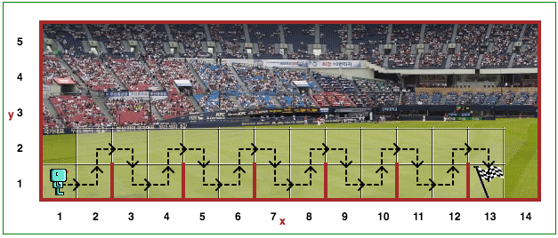

Atidarykite Robotuko aplinkos 10 lygį.
Pastaruoju metu Reeborgas atlieka savo fizinių gebėjimų testus. Vienas iš dalykų, kuriuos jis praktikuoja - šokinėjimas per mažas kliūtis. Šiame pasaulyje Robotukas turi peršokti kliūtis, kurios visos yra vienodo aukščio ir vienodai nutolusios viena nuo kitos. Reikia sukurti funkciją, pvz:
def peršokti_kliūtį():
# čia reikia užrašyti
# 1 kliūties peršokimo kodą
Turite panaudoti repeat ciklą, kuris, iškviesdamas funkciją peršokti_kliūtį(), peršoktų visas kliūtis
ir baigtų sportinį pratimą pozicijoje (13, 1). Kelias, kuriuo reikia eiti, pažymėtas juoda punktyrine linija su
rodyklėmis.